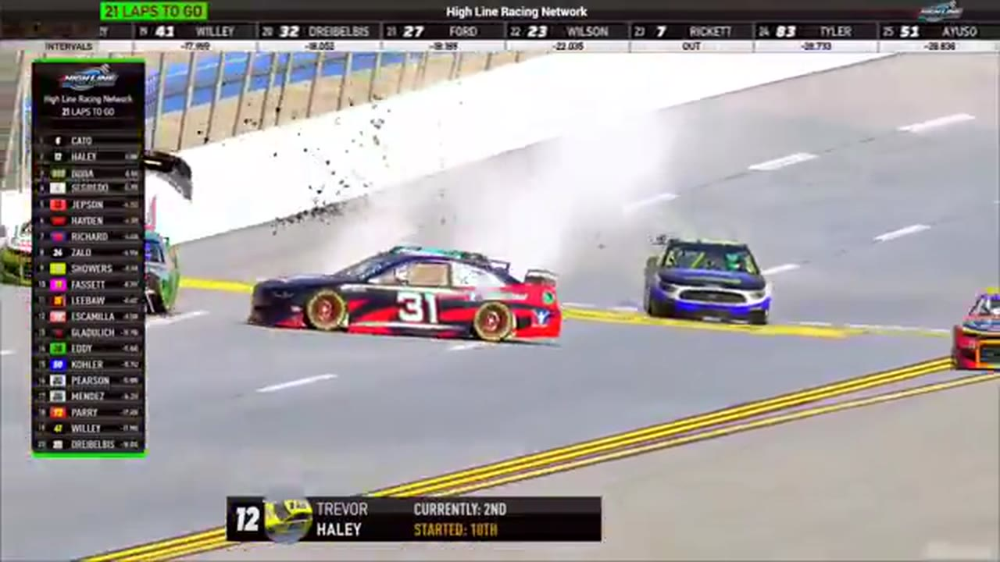

Zack Cato
Team assignment not stated in the structured owner record.
A REVIEWED STORY FILE
- Official files
- 4
- Central editions
- 1
- Exact tape cues
- 8
- Accepted podiums
- 0
Zack Cato appears in 4 official HLRN broadcast files across Season 1. The current result ledger does not assign this driver a supported top-three finish. A consistently stated team affiliation remains open for owner review. The currently indexed source window runs from November 17, 2025 through April 20, 2026.
Highline Central supplies 1 bounded race edition, while the primary chapter index supplies 8 direct jump points. Daytona is the most frequent named track in the current appearance ledger. The densest direct-tape categories are strategy (2 cues) and stage (2 cues). Those counts describe where the name is easiest to find; they are not fault, pace, or performance grades. A source-attributed car frame is published with its original video and timestamp. That is the current discovery map for Zack Cato.
Official name signals are used for discovery only. They do not become starts, points, incident counts, or an ability grade. This page is deliberately detailed about the tape and restrained about the unavailable competition record. Separately, 5 Highline Live files sit on the bonus shelf and never enter the official season ledger. The displayed name is labeled transcript normalized; that status remains visible so an owner roster can strengthen or correct the identity without rewriting the evidence trail. Those boundaries define Zack Cato's public HLRN file.
8 featured race-tape cues
These are discovery routes into complete HLRN broadcasts, not performance grades or inferred results.
- S1 / R8 · STAGE
Stage 2 countdown at Talladega
S1 / R8 at 1:23:11: The broadcast enters a stage-scoring discussion at Talladega with Trevor Haley, Zack Cato, and Evan Perry in the scoring call. The clip preserves the on-air timing or points call without promoting it into a complete stage result; the accepted feature result ledger remains separate.
Talladega - S1 / R1 · STAGE
Stage 2 winner call at Daytona
S1 / R1 at 1:06:22: The broadcast enters a stage-scoring discussion at Daytona with Zack Cato, Randy Switzer, and Juan Escamilla in the scoring call. The clip preserves the on-air timing or points call without promoting it into a complete stage result; the accepted feature result ledger remains separate.
Daytona - S1 / R1 · BATTLE
Zack Cato and Ryan Wilson carry the Daytona lead battle
S1 / R1 at 54:32: The Daytona pack compresses in a front-pack fight while Zack Cato and Ryan Wilson are named on the call. The chapter keeps the live battle intact and makes no finishing-order claim.
Daytona - S1 / R1 · RESTART
Jaden Porter and Francisco Bacayo bring Daytona back to green
S1 / R1 at 1:12:12: Jaden Porter, Francisco Bacayo, and Zack Cato are in the booth's front-pack call as Daytona returns to green. The cut keeps the restart launch and the first lap of lane development together.
Daytona - S1 / R1 · RESTART
Zack Cato and Nick Bowman bring Daytona back to green
S1 / R1 at 1:44:01: Zack Cato and Nick Bowman are in the booth's front-pack call as Daytona returns to green. The cut keeps the restart launch and the first lap of lane development together.
Daytona - S1 / R8 · STRATEGY
Trevor Haley enters the Talladega pit-strategy swing
S1 / R8 at 1:22:15: Pit timing starts to reorganize the field, with Trevor Haley, Zack Cato, and Larry Eddy named in the sequence. The clip is a strategy receipt from the primary Talladega broadcast, not a reconstructed scoring sheet.
Talladega - S1 / R1 · STRATEGY
Jerry Fassett enters the Daytona pit-strategy swing
S1 / R1 at 1:14:32: Pit timing starts to reorganize the field, with Jerry Fassett, Zack Cato, Francisco Bacayo, and John Miles named in the sequence. The clip is a strategy receipt from the primary Daytona broadcast, not a reconstructed scoring sheet.
Daytona - S1 / R8 · INCIDENT
James Jepsen and Michael Wiley surface in the Talladega caution replay
S1 / R8 at 1:40:46: The caution sequence centers the replay call on James Jepsen, Michael Wiley, and Zack Cato. This is a source-bounded incident window; it preserves what the booth reviews without assigning unsupported fault.
Talladega
Recent editions connected to Zack Cato
Verified team history is not consistently stated. No position-specific top-three result is currently accepted. Name normalization remains reviewable against owner records.